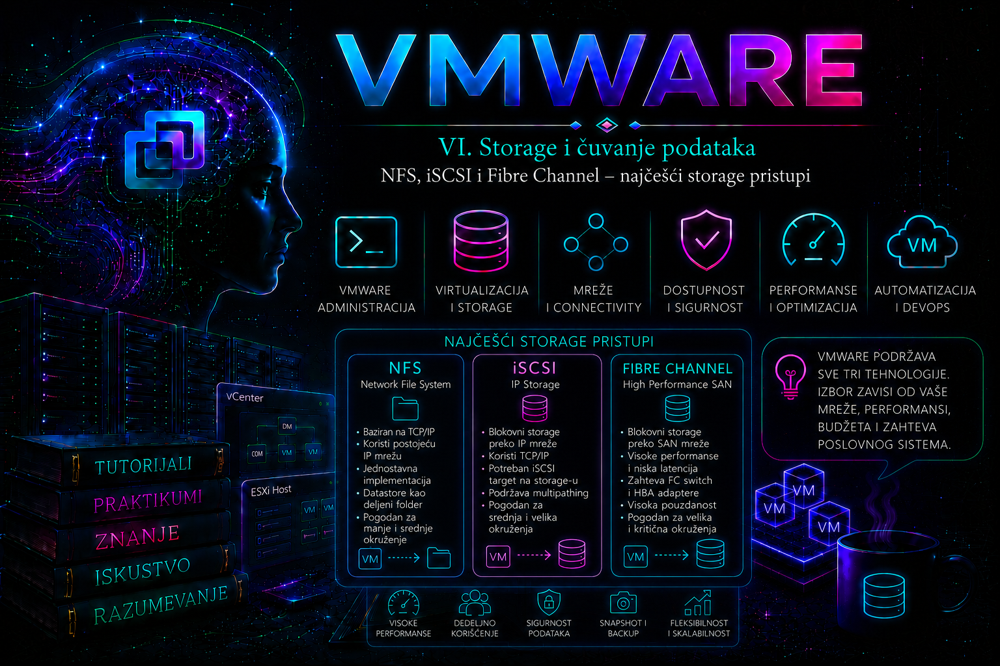

VMware

Virtuelna mašina može imati dovoljno procesorskih i memorijskih resursa, ali njen rad neće biti stabilan ako storage infrastruktura nije pravilno projektovana. Na storage sistemu nalaze se virtuelni diskovi, konfiguracione datoteke, datoteke snapshot-ova, swap datoteke, logovi i drugi elementi potrebni za pokretanje i rad virtuelnih mašina. Zbog toga storage nije samo mesto za čuvanje podataka već jedan od ključnih slojeva čitave VMware infrastrukture.
Izbor storage tehnologije utiče na performanse virtuelnih mašina, raspoloživost podataka, mogućnost migracije između hostova, način zaštite od otkaza i složenost svakodnevne administracije. Loše projektovana storage infrastruktura može izazvati velike latencije, gubitak putanja, prekid pristupa datastore-u, zamrzavanje virtuelnih mašina ili potpun prekid rada većeg broja sistema.
U tradicionalnim VMware okruženjima najčešće se koriste tri pristupa zajedničkom storage-u:
- NFS – pristup udaljenom fajl sistemu preko IP mreže;
- iSCSI – blokovski pristup LUN-ovima preko TCP/IP mreže;
- Fibre Channel – blokovski pristup LUN-ovima preko specijalizovane SAN infrastrukture.
NFS predstavlja file-level storage, dok iSCSI i Fibre Channel predstavljaju block-level storage. Ova razlika određuje kako ESXi vidi storage, ko upravlja fajl sistemom i kako se datastore kreira.
Verzijski okvir lekcije je vSphere/ESXi 8.x, sa posebno navedenim promenama iz Update izdanja. Osnovni arhitektonski pojmovi i većina read-only ESXCLI provera važe i u novijoj VCF/vSphere 9 dokumentacionoj liniji, ali podržani adapteri, firmware, maksimalne vrednosti, podrazumevane claim politike i pojedine opcije komandi moraju se proveriti za tačan build. Licenca sama ne čini storage kombinaciju podržanom: merodavne su Broadcom Compatibility Guide matrice i matrice interoperabilnosti proizvođača storage sistema.
Zajednički storage u VMware infrastrukturi
Zajednički storage omogućava da više ESXi hostova pristupa istim podacima virtuelnih mašina. U tradicionalnom vSphere dizajnu virtuelna mašina može biti pokrenuta na jednom hostu, dok njeni VMDK diskovi ostaju na datastore-u koji je dostupan svim hostovima u klasteru.
Kada se izvodi standardni compute vMotion između hostova koji već imaju pristup istom datastore-u, prenose se aktivno stanje virtuelne mašine, sadržaj memorije i stanje izvršavanja procesora, dok VMDK datoteke ostaju na postojećem datastore-u. Ako izvorni i odredišni host nemaju zajednički storage, migracija može obuhvatiti i premeštanje datoteka virtuelne mašine, ali tada proces zahteva više mrežnih resursa i traje duže.
Zajednički storage olakšava korišćenje funkcija kao što su:
- vSphere vMotion;
- vSphere High Availability;
- Distributed Resource Scheduler;
- Storage vMotion;
- centralizovani backup virtuelnih mašina;
- ponovno pokretanje VM-a na drugom hostu nakon otkaza;
- održavanje ESXi hostova bez dužeg prekida servisa.
Zajednički storage, međutim, ne sme predstavljati jednu tačku otkaza. Produkciono okruženje mora imati redundantne kontrolere, mrežne ili SAN putanje, napajanja, switch-eve i odgovarajuće politike failover-a.
File-level i block-level storage
Kod file-level storage-a storage sistem upravlja fajl sistemom i izlaže direktorijum ili volume ESXi hostu. ESXi pristupa datotekama preko mrežnog protokola. NFS datastore je najvažniji primer ovakvog pristupa.
Kod block-level storage-a storage sistem izlaže logički blokovski uređaj – LUN. ESXi taj uređaj vidi kao disk i na njemu najčešće kreira VMFS fajl sistem. iSCSI i Fibre Channel koriste ovaj model.
| Karakteristika | NFS | iSCSI | Fibre Channel |
|---|---|---|---|
| Tip pristupa | File-level | Block-level | Block-level |
| Mreža | Ethernet / TCP-IP | Ethernet / TCP-IP | FC SAN fabric |
| Objekat koji storage izlaže | NFS export | LUN | LUN |
| Fajl sistem datastore-a | Fajl sistem storage uređaja | Najčešće VMFS | Najčešće VMFS |
| Tipična složenost | Niža | Srednja | Viša |
| Tipična infrastruktura | NAS | IP SAN | FC SAN |
NFS – Network File System
NFS omogućava da ESXi host preko IP mreže pristupi udaljenom direktorijumu koji je storage sistem eksportovao. ESXi poseduje ugrađeni NFS klijent, a udaljeni NFS volume registruje kao datastore. Datoteke virtuelnih mašina nalaze se direktno u fajl sistemu kojim upravlja NAS ili drugi NFS storage sistem.
Za razliku od iSCSI-ja i Fibre Channel-a, kod NFS-a ESXi ne dobija sirovi blokovski LUN i ne kreira VMFS. Storage uređaj upravlja sopstvenim fajl sistemom, raspodelom prostora, pristupnim pravima i dostupnošću eksportovanog direktorijuma.
NFS 3 i NFS 4.1
ESXi podržava NFS 3 i NFS 4.1 datastore-e. Ove verzije protokola razlikuju se u načinu uspostavljanja sesije, autentifikaciji, zaključavanju datoteka i podršci za više putanja.
NFS 3 je dugo prisutan u VMware okruženjima i relativno je jednostavan za implementaciju. Za pristup se tipično koriste IP adresa NFS servera i putanja do eksportovanog direktorijuma. Visoka dostupnost se često ostvaruje mehanizmima samog storage sistema, redundantnom mrežom, više VMkernel adaptera i različitim NFS export-ima, ali NFS 3 nema protokolski multipathing istog datastore-a kakav postoji kod NFS 4.1.
NFS 4.1 podržava session trunking i može koristiti više putanja prema istom datastore-u kada storage sistem podržava odgovarajuću funkcionalnost. Više IP adresa mora predstavljati isti NFS server i isti server identity. Nije dovoljno samo navesti više proizvoljnih adresa storage uređaja.
NFS 4.1 može koristiti Kerberos autentifikaciju u podržanoj konfiguraciji. To, međutim, ne znači da je svaki NFS 4.1 datastore automatski konfigurisan sa Kerberos zaštitom. Potrebno je posebno podesiti identitet hosta, DNS, vreme, domen i odgovarajuću autentifikaciju.
Kod vSphere 8 treba razlikovati dve novije mogućnosti od starijeg, opšteg opisa NFS-a. Počev od ESXi 8.0 Update 1, jedan NFS 3 datastore može koristiti više TCP konekcija radi paralelizacije saobraćaja, ali to nije isto što i NFS 4.1 multipathing i ne uklanja potrebu za pravilnim mrežnim failover dizajnom. Počev od ESXi 8.0 Update 3, NFS 4.1 konekcija može se vezati za određeni VMkernel adapter; u multipath konfiguraciji može se navesti više VMkernel adaptera. Ove mogućnosti zahtevaju podržan ESXi build, odgovarajuću konfiguraciju servera i proveru interoperabilnosti, pa ih ne treba pretpostaviti samo zato što datastore koristi NFS.
Kerberos za NFS 4.1 u ESXi podržava bezbednosne modele krb5 i krb5i. Model krb5 obezbeđuje autentifikaciju, dok krb5i dodaje proveru integriteta poruka. Izbor bezbednosnog modela mora odgovarati politici organizacije i mogućnostima NFS servera; greška u DNS-u, vremenu ili principal identitetu može sprečiti montiranje iako je IP putanja ispravna.
Jedan datastore ne treba montirati na istom ESXi hostu istovremeno kao NFS 3 i NFS 4.1. Verzija protokola bira se prilikom kreiranja datastore-a i mora biti usklađena na svim hostovima koji mu pristupaju.
Preduslovi za NFS datastore
- NFS servis mora biti omogućen na storage uređaju.
- Export mora biti dostupan IP adresama ESXi hostova.
- ESXi host mora imati odgovarajući VMkernel mrežni interfejs.
- Routing i VLAN konfiguracija moraju omogućiti pristup NFS serveru.
- MTU mora biti usklađen duž cele putanje ako se koriste jumbo frame-ovi.
- Storage export mora imati dozvole potrebne za čitanje i pisanje.
- DNS mora biti ispravan ako se umesto IP adresa koriste imena.
- Vreme mora biti sinhronizovano, naročito ako se koristi Kerberos.
NFS mrežni dizajn
NFS saobraćaj treba odvojiti od korisničkog i administratorskog saobraćaja. U manjem laboratorijskom okruženju isti fizički adapter može nositi više VLAN-ova, ali u produkciji treba obezbediti dovoljnu propusnost i redundansu.
Tipičan produkcioni dizajn može sadržati:
- poseban NFS VLAN;
- najmanje dva fizička uplink-a;
- redundantne fizičke switch-eve;
- najmanje dve mrežne veze na storage uređaju;
- dosledan MTU na ESXi hostu, switch-evima i storage uređaju;
- praćenje gubitka paketa, grešaka i zasićenja mreže.
Jumbo frame nije obavezan da bi NFS radio. Može smanjiti broj paketa i procesorsko opterećenje u određenim okruženjima, ali samo kada je MTU dosledno konfigurisan od VMkernel adaptera do storage interfejsa. Delimična konfiguracija može izazvati prekide, fragmentaciju ili teško uočljive probleme sa performansama.
Pregled VMkernel interfejsa
esxcli network ip interface listKomanda prikazuje VMkernel adaptere, njihove port grupe, MAC adrese, MTU i status.
Pregled IPv4 adresa VMkernel interfejsa
esxcli network ip interface ipv4 getTestiranje mrežne dostupnosti NFS servera
vmkping -I vmk2 192.168.30.20
Parametar -I određuje VMkernel adapter sa kog se šalje testni saobraćaj. Time se izbegava situacija u kojoj običan ping uspe, ali test koristi pogrešan VMkernel interfejs ili pogrešnu routing putanju.
Testiranje jumbo frame putanje
vmkping -I vmk2 -d -s 8972 192.168.30.20
Vrednost 8972 koristi se za proveru IP putanje sa MTU 9000 kada se uračunaju IP i ICMP zaglavlja. Parametar -d zabranjuje fragmentaciju. Test treba ponoviti prema svim relevantnim storage interfejsima.
Dodavanje NFS 3 datastore-a
esxcli storage nfs add \
--host 192.168.30.20 \
--share /exports/vmware_prod \
--volume-name NFS_PROD_01Parametri označavaju:
--host– IP adresu ili ime NFS servera;--share– eksportovanu putanju;--volume-name– lokalno ime datastore-a u ESXi okruženju.
Dodavanje datastore-a ovom komandom odnosi se na host na kojem je komanda izvršena. U klasteru je potrebno obezbediti da isti datastore bude pravilno montiran na svim odgovarajućim hostovima. Za centralizovanu administraciju većeg broja hostova pogodniji su vCenter, PowerCLI, Host Profiles ili automatizovani alati.
Pregled NFS 3 datastore-a
esxcli storage nfs listPregled NFS 4.1 datastore-a
esxcli storage nfs41 listUklanjanje NFS 3 datastore-a
esxcli storage nfs remove --volume-name NFS_PROD_01Datastore se ne sme uklanjati dok se na njemu nalaze aktivne virtuelne mašine, registrovane VM konfiguracije, ISO datoteke povezane sa VM-ovima, aktivni snapshot-i, datastore heartbeat zavisnosti ili drugi procesi koji ga koriste.
NFS datastore preko PowerCLI-ja
Get-VMHost -Name "esxi01.lab.local" |
New-Datastore `
-Name "NFS_PROD_01" `
-Nfs `
-NfsHost "192.168.30.20" `
-Path "/exports/vmware_prod"Provera NFS datastore-a preko PowerCLI-ja
Get-Datastore -Name "NFS_PROD_01" |
Select-Object Name, Type, CapacityGB, FreeSpaceGBPrednosti NFS-a
- jednostavno dodavanje datastore-a bez kreiranja VMFS-a;
- korišćenje standardne Ethernet infrastrukture;
- jednostavno proširenje kapaciteta kada ga storage sistem podržava;
- dobra integracija sa NAS sistemima;
- jasna vidljivost direktorijuma i VM datoteka na storage strani;
- mogućnost korišćenja storage snapshot i clone funkcija;
- jednostavnije laboratorijske i manje produkcione implementacije.
Ograničenja i rizici NFS-a
- zavisnost od kvaliteta Ethernet mreže;
- pogrešne export dozvole mogu potpuno onemogućiti pristup;
- DNS problem može uticati na datastore ako je montiran preko imena;
- MTU neusaglašenost može izazvati gubitak paketa i nestabilnost;
- NFS 3 nema protokolski multipathing istog datastore-a;
- performanse zavise od NAS kontrolera, diskova, cache-a i mreže;
- jedan preopterećen mrežni uplink može postati usko grlo za više VM-ova.
iSCSI – blokovski storage preko IP mreže
iSCSI prenosi SCSI komande preko TCP/IP mreže. Storage uređaj izlaže jedan ili više LUN-ova, a ESXi ih vidi kao blokovske uređaje. Na odgovarajućem LUN-u administrator najčešće kreira VMFS datastore.
iSCSI omogućava korišćenje standardne Ethernet infrastrukture bez posebnih Fibre Channel HBA kartica i FC switch-eva. Ipak, činjenica da koristi Ethernet ne znači da treba da deli neadekvatno dimenzionisanu mrežu sa korisničkim saobraćajem. Produkcioni iSCSI zahteva pažljivo projektovane VLAN-ove, VMkernel adaptere, putanje, fizičke uplink-e i redundantne storage target interfejse.
Osnovni elementi iSCSI okruženja
- Initiator – komponenta na ESXi hostu koja uspostavlja vezu prema storage uređaju.
- Target – iSCSI servis ili interfejs storage sistema koji prihvata konekcije.
- IQN – jedinstveni iSCSI Qualified Name initiator-a ili target-a.
- LUN – logički blokovski uređaj koji storage predstavlja hostu.
- Portal – IP adresa i TCP port preko kojih je target dostupan.
- Discovery – proces pronalaženja target-a i dostupnih LUN-ova.
- VMkernel adapter – mrežni interfejs kojim ESXi šalje iSCSI saobraćaj.
- Multipathing – korišćenje više putanja između hosta i LUN-a.
Standardni TCP port za iSCSI je 3260. Firewall, ACL pravila i mrežna segmentacija moraju omogućiti odgovarajuću komunikaciju između ESXi VMkernel adresa i iSCSI target portala.
Softverski, zavisni i nezavisni hardverski iSCSI
ESXi može koristiti više vrsta iSCSI adaptera:
- Software iSCSI adapter koristi standardne mrežne adaptere i ESXi softverski initiator. Ovo je veoma česta implementacija.
- Dependent hardware iSCSI adapter koristi određene hardverske funkcije mrežnog adaptera, ali i dalje zavisi od VMware mrežne konfiguracije.
- Independent hardware iSCSI adapter preuzima veći deo iSCSI i mrežne obrade i može imati sopstvenu IP konfiguraciju.
Vrsta adaptera, drajver, firmware i podržana verzija ESXi-ja moraju biti provereni u Broadcom Compatibility Guide-u i dokumentaciji proizvođača servera i storage sistema.
Pregled storage adaptera
esxcli storage core adapter listPregled iSCSI adaptera
esxcli iscsi adapter listPregled IQN imena softverskog iSCSI adaptera
esxcli iscsi adapter get --adapter vmhba64
Oznaka adaptera nije uvek vmhba64. Prvo je treba utvrditi komandom esxcli iscsi adapter list.
Omogućavanje softverskog iSCSI adaptera
esxcli iscsi software set --enabled=trueProvera statusa softverskog iSCSI initiator-a
esxcli iscsi software getDodavanje dynamic discovery portala
esxcli iscsi adapter discovery sendtarget add \
--adapter vmhba64 \
--address 192.168.40.20:3260Dynamic discovery omogućava da ESXi kontaktira target portal i dobije informacije o dostupnim target-ima. U redundantnom dizajnu mogu postojati različiti portali na dva storage kontrolera ili dve nezavisne storage mreže.
Pregled dynamic discovery konfiguracije
esxcli iscsi adapter discovery sendtarget list \
--adapter vmhba64Pregled aktivnih iSCSI sesija
esxcli iscsi session listPregled iSCSI target-a
esxcli iscsi adapter target list \
--adapter vmhba64CHAP autentifikacija
iSCSI može koristiti CHAP autentifikaciju između initiator-a i target-a. CHAP potvrđuje identitet na osnovu korisničkog imena i deljene tajne. Mutual CHAP omogućava autentifikaciju u oba smera kada je podržana.
CHAP nije zamena za mrežnu izolaciju, ACL pravila, LUN masking i druge zaštitne mehanizme. Tajne treba čuvati kao osetljive podatke i menjati kontrolisano, jer neusaglašena promena može prekinuti pristup LUN-ovima.
iSCSI port binding
Kod software iSCSI konfiguracije VMkernel adapteri mogu se povezati sa iSCSI adapterom kroz network port binding. Time se određuje kojim VMkernel interfejsima software iSCSI initiator uspostavlja sesije prema target-ima.
U tipičnoj konfiguraciji sa dva VMkernel adaptera:
- svaki VMkernel adapter koristi posebnu IP adresu;
- svaki koristi odgovarajući fizički uplink kao aktivan;
- drugi uplink se postavlja kao unused za tu port grupu;
- binding se dodaje na software iSCSI adapter;
- target mora biti dostupan iz odgovarajuće mreže;
- nakon konfiguracije radi se rescan adaptera.
Port binding se ne primenjuje mehanički u svakoj iSCSI topologiji. Kod routed iSCSI mreža, različitih subnet-a ili određenih vendor dizajna treba slediti dokumentaciju storage proizvođača i odgovarajuće Broadcom smernice.
Presudno pravilo je topologija, a ne željeni broj putanja. Software iSCSI port binding namenjen je VMkernel portovima koji pristupaju target portovima u istom broadcast domenu i istom IP subnetu. Svaki vezani VMkernel port mora imati tačno jedan fizički uplink u stanju Active, dok ostali uplink-ovi za tu port grupu moraju biti Unused. Link aggregation, EtherChannel ili LACP ne predstavljaju zamenu za ovaj multipathing model. Kada su VMkernel i target portovi u različitim subnetima i komunikacija zahteva routing, port binding se ne koristi; redundantnost se projektuje rutiranjem i odvojenim putanjama prema vendor podržanoj arhitekturi. Pogrešno vezivanje portova iz različitih subneta može proizvesti duge rescan operacije, pogrešan broj putanja ili potpuni gubitak vidljivosti uređaja.
iSCSI standardno koristi TCP port 3260. Dozvoljen port i uspešan vmkping potvrđuju samo deo putanje: administrator zatim mora dokazati postojanje discovery rezultata, aktivne iSCSI sesije, target pristupa, LUN mapping-a i PSA putanja. CHAP obezbeđuje autentifikaciju, ali sam po sebi ne šifruje podatke u prenosu; poverljivost se rešava mrežnom izolacijom i, kada je podržano kao celina, IPsec ili drugim odobrenim zaštitnim slojem.
Pregled VMkernel port binding-a
esxcli iscsi networkportal list \
--adapter vmhba64Dodavanje VMkernel adaptera u port binding
esxcli iscsi networkportal add \
--adapter vmhba64 \
--nic vmk2esxcli iscsi networkportal add \
--adapter vmhba64 \
--nic vmk3Testiranje iSCSI putanja
vmkping -I vmk2 192.168.40.20vmkping -I vmk3 192.168.40.21Svaki VMkernel adapter treba proveriti prema target adresi kojoj je namenjen. Uspešan ping ne dokazuje da je iSCSI target pravilno konfigurisan, ali potvrđuje osnovnu IP dostupnost.
Rescan iSCSI adaptera
esxcli storage core adapter rescan \
--adapter vmhba64Rescan svih storage adaptera
esxcli storage core adapter rescan --allRescan treba izvršiti nakon dodavanja target portala, promene LUN masking-a, prezentovanja novog LUN-a ili obnove storage putanje. Rescan sam po sebi ne može popraviti pogrešan VLAN, nedostupan target, neispravan zoning ili pogrešan LUN masking.
Pregled otkrivenih uređaja
esxcli storage core device listPregled uređaja određenog adaptera
esxcli storage core adapter device list \
--adapter vmhba64Prednosti iSCSI-ja
- blokovski storage preko standardne IP infrastrukture;
- niža ulazna cena u odnosu na klasični FC SAN;
- mogućnost korišćenja postojećih Ethernet znanja i alata;
- podrška za multipathing;
- pogodan za mala, srednja i mnoga velika okruženja;
- VMFS datastore i standardne vSphere storage funkcije;
- mogućnost automatizacije kroz ESXCLI, PowerCLI i API.
Rizici iSCSI konfiguracije
- zagušenje Ethernet mreže može direktno uticati na diskovne operacije;
- pogrešan VLAN ili routing može onemogućiti target pristup;
- neispravan MTU izaziva nestabilnost i gubitak paketa;
- pogrešan port binding može smanjiti broj putanja ili prekinuti pristup;
- target-side load balancing ne mora biti kompatibilan sa ESXi software iSCSI dizajnom;
- pogrešan LUN masking može izložiti LUN pogrešnim hostovima;
- jedan switch ili jedan storage kontroler može postati tačka otkaza;
- neusklađeni firmware i drajveri mogu izazvati prekide i loše performanse.
Fibre Channel – specijalizovana SAN infrastruktura
Fibre Channel predstavlja blokovski storage protokol projektovan za pouzdan prenos storage saobraćaja. ESXi host koristi Fibre Channel HBA adaptere, koji se povezuju sa FC switch-evima, a zatim sa portovima storage sistema.
U klasičnom dizajnu FC koristi posebnu SAN fabric infrastrukturu, odvojenu od standardne Ethernet mreže. Postoje i druge tehnologije, kao što je Fibre Channel over Ethernet, ali klasični FC i FCoE ne treba posmatrati kao potpuno istu implementaciju.
Fibre Channel se često koristi u većim data centrima, bankama, telekomunikacionim sistemima i drugim okruženjima u kojima su potrebne predvidljive performanse, niska latencija, veliki broj I/O operacija i višestruka redundansa.
Elementi Fibre Channel infrastrukture
- HBA – Host Bus Adapter u ESXi serveru.
- WWPN – World Wide Port Name pojedinačnog FC porta.
- WWNN – World Wide Node Name uređaja.
- FC switch – switch namenjen SAN saobraćaju.
- Fabric – skup povezanih FC switch-eva i uređaja.
- Zoning – kontrola koji initiator portovi mogu komunicirati sa kojim target portovima.
- LUN masking – kontrola koji LUN-ovi se predstavljaju određenim hostovima.
- Storage target port – FC port na storage kontroleru.
Zoning i LUN masking
Zoning se konfiguriše na FC fabric-u i određuje koji HBA portovi mogu uspostaviti komunikaciju sa storage target portovima. LUN masking se konfiguriše na storage sistemu i određuje koje LUN-ove određeni host ili grupa hostova može videti.
Ova dva mehanizma imaju različite uloge:
- zoning kontroliše komunikaciju između FC portova;
- LUN masking kontroliše pristup konkretnim blokovskim uređajima.
Ispravan zoning ne garantuje da će host videti LUN ako LUN masking nije podešen. Isto tako, prezentovanje LUN-a host grupi nije dovoljno ako FC initiator i target portovi ne mogu da komuniciraju kroz fabric.
Single-initiator zoning
U mnogim enterprise okruženjima primenjuje se single-initiator zoning, pri kojem se u jednoj zoni nalazi jedan initiator WWPN i jedan ili više odgovarajućih target portova, u skladu sa preporukom proizvođača. Ovakav pristup olakšava izolaciju problema i smanjuje neželjene interakcije između hostova.
Konkretan zoning model mora biti usklađen sa dizajnom SAN infrastrukture i dokumentacijom proizvođača FC switch-eva i storage sistema.
Dual-fabric dizajn
Produkcioni FC SAN se često gradi kao dve potpuno nezavisne fabric celine:
- Fabric A povezuje prvi HBA port sa prvim skupom storage portova;
- Fabric B povezuje drugi HBA port sa drugim skupom storage portova;
- fabric-i ne zavise od istog switch-a;
- otkaz jednog HBA porta, kabla ili switch-a ne prekida sve storage putanje.
Ako oba HBA porta prolaze kroz isti FC switch, postoje dve putanje, ali i dalje postoji zajednička tačka otkaza. Prava redundansa zahteva nezavisnost ključnih komponenti.
Pregled Fibre Channel adaptera
esxcli storage san fc listKomanda prikazuje FC adaptere, WWPN i WWNN identifikatore, brzinu veze i stanje porta.
Pregled svih storage adaptera
esxcli storage core adapter listPregled FC događaja
esxcli storage san fc events get \
--adapter vmhba2Oznaka adaptera mora odgovarati stvarnom FC HBA adapteru na hostu. Događaji mogu pomoći pri analizi promene stanja linka, fabric prijave i drugih FC problema.
Pregled FC statistike
esxcli storage san fc stats get \
--adapter vmhba2Rescan FC adaptera
esxcli storage core adapter rescan \
--adapter vmhba2Pregled uređaja koje vidi FC adapter
esxcli storage core adapter device list \
--adapter vmhba2Prednosti Fibre Channel-a
- namenska storage infrastruktura;
- predvidljive performanse i mala latencija;
- zrela enterprise multipathing podrška;
- odvajanje storage saobraćaja od LAN mreže;
- skalabilnost za velike data centre;
- detaljna kontrola pristupa kroz zoning i LUN masking;
- visoka dostupnost kroz dual-fabric arhitekturu.
Ograničenja Fibre Channel-a
- veća cena HBA kartica, optike, switch-eva i licenci;
- potrebno specijalizovano SAN znanje;
- zoning i masking povećavaju administrativnu složenost;
- pogrešna izmena fabric-a može uticati na veliki broj hostova;
- firmware, drajveri i HBA modeli moraju biti strogo usklađeni;
- troubleshooting zahteva podatke sa ESXi hosta, FC switch-a i storage sistema.
VMFS na iSCSI i Fibre Channel LUN-ovima
Kada ESXi otkrije blokovski LUN preko iSCSI-ja ili Fibre Channel-a, na njemu se može kreirati VMFS datastore. VMFS je klasterski fajl sistem projektovan tako da više ESXi hostova može istovremeno pristupati istom datastore-u.
VMFS upravlja zaključavanjem datoteka i koordinacijom pristupa, ali ne može nadoknaditi pogrešno prezentovanje LUN-a, nestabilne putanje ili storage uređaj koji ne podržava odgovarajući način rada.
Svi hostovi koji treba da koriste isti VMFS datastore moraju videti isti LUN sa konzistentnim identitetom. Ne treba kreirati poseban VMFS na istom zajedničkom LUN-u sa svakog hosta. VMFS se kreira jednom, a zatim se postojeći datastore otkriva i montira na drugim hostovima.
Identifikacija storage uređaja
ESXi storage uređaje identifikuje trajnim identifikatorima kao što su NAA, EUI ili T10 identifikatori. U administraciji treba koristiti stabilan identifikator uređaja, a ne oslanjati se samo na promenljive nazive adaptera ili redosled prikaza.
esxcli storage core device listPrimer identifikatora može izgledati ovako:
naa.6006016045502500c4f5f3e8a17fe611Pregled VMFS ekstenata
esxcli storage vmfs extent listOva komanda povezuje VMFS datastore sa odgovarajućim blokovskim uređajem i particijom. Veoma je korisna kada administrator mora da utvrdi koji NAA uređaj pripada kom datastore-u.
Pregled svih montiranih datastore-a
esxcli storage filesystem listPluggable Storage Architecture
ESXi koristi Pluggable Storage Architecture – PSA – za upravljanje storage putanjama i multipathing modulima. PSA omogućava da uređaje preuzmu VMware ili vendor multipathing moduli.
Važni elementi ovog sloja su:
- NMP – Native Multipathing Plugin, VMware modul za veliki broj tradicionalnih storage uređaja.
- HPP – High Performance Plugin, namenjen određenim high-performance uređajima, naročito NVMe okruženjima.
- MPP – multipathing plugin proizvođača storage sistema.
- SATP – Storage Array Type Plugin, određuje način aktivacije putanja i failover ponašanje.
- PSP – Path Selection Plugin, određuje kojom aktivnom putanjom se šalje I/O.
Nije svaki storage uređaj nužno pod kontrolom NMP-a. Pre izmene politike administrator mora proveriti koji modul je preuzeo uređaj.
Pregled PSA uređaja
esxcli storage core device listPregled NMP uređaja
esxcli storage nmp device listPregled dostupnih SATP modula
esxcli storage nmp satp listPregled claim pravila
esxcli storage core claimrule listStorage multipathing
Multipathing omogućava da ESXi koristi više fizičkih ili logičkih putanja do istog blokovskog uređaja. Putanja može obuhvatati:
- HBA ili mrežni adapter na hostu;
- kabl;
- FC ili Ethernet switch;
- storage target port;
- storage kontroler;
- vezu prema konkretnom LUN-u.
Dve putanje nisu nužno dve nezavisne putanje. Ako obe prolaze kroz isti switch, isti storage kontroler ili isti fizički adapter, zajednička komponenta i dalje predstavlja tačku otkaza.
Stanja storage putanja
U zavisnosti od storage sistema i konfiguracije, putanja može biti prikazana kao:
- active – putanja je dostupna za I/O;
- standby – putanja je dostupna, ali se aktivira nakon failover-a;
- dead – putanja nije dostupna;
- disabled – putanja je administrativno isključena;
- unknown – stanje nije pravilno utvrđeno.
Na ALUA storage sistemima aktivne putanje mogu imati različit nivo optimizacije. Active Optimized putanja vodi preko kontrolera koji je vlasnik ili optimalni procesor LUN-a, dok Active Non-Optimized može biti dostupna, ali sa manje povoljnom putanjom kroz storage sistem.
Pregled svih storage putanja
esxcli storage core path listPregled putanja određenog uređaja
esxcli storage core path list \
--device naa.6006016045502500c4f5f3e8a17fe611Path Selection Policy
Kada NMP upravlja uređajem, Path Selection Policy određuje način izbora aktivne putanje. Najčešće VMware politike su:
- Fixed – ESXi koristi preferiranu putanju kada je dostupna. Ako ona otkaže, prelazi na drugu i može se vratiti na preferiranu kada ponovo postane dostupna.
- Most Recently Used – koristi putanju koja je poslednja izabrana. Nakon otkaza prelazi na drugu, ali se po pravilu ne vraća automatski na prethodnu samo zato što se oporavila.
- Round Robin – raspoređuje I/O između više aktivnih putanja prema definisanom algoritmu.
Round Robin nije automatski najbolji izbor za svaki uređaj. Ispravna politika zavisi od tipa storage sistema, ALUA podrške, vendor multipathing modula i preporuke proizvođača. Pogrešna promena može smanjiti performanse ili izazvati nestabilno ponašanje.
Pregled politike određenog uređaja
esxcli storage nmp device list \
--device naa.6006016045502500c4f5f3e8a17fe611Promena politike na Round Robin
esxcli storage nmp device set \
--device naa.6006016045502500c4f5f3e8a17fe611 \
--psp VMW_PSP_RR
Ovu komandu treba izvršiti samo kada dokumentacija storage proizvođača i Broadcom Compatibility Guide potvrđuju da je VMW_PSP_RR odgovarajući izbor za konkretan model uređaja i verziju softvera.
Zašto broj putanja nije dovoljan pokazatelj
Administrator ne treba da proverava samo koliko putanja postoji. Potrebno je utvrditi:
- da li su putanje aktivne;
- preko kojih adaptera prolaze;
- koje target portove koriste;
- da li prolaze kroz nezavisne switch-eve;
- da li su optimizovane ili neoptimizovane;
- koja PSP politika upravlja I/O saobraćajem;
- da li se broj putanja poklapa na svim hostovima;
- da li vendor dokumentacija očekuje upravo takvu topologiju.
Uporedni izbor storage pristupa
Put I/O zahteva i zone odgovornosti
Storage incident se ne rešava nagađanjem „da li je do VMware-a ili storage-a”, već praćenjem istog I/O zahteva kroz slojeve. Kod NFS-a put tipično vodi od virtuelnog SCSI kontrolera i VMDK datoteke, preko ESXi NFS klijenta, VMkernel adaptera, vSwitch-a, fizičkog NIC-a i Ethernet mreže do NFS servisa i fajl sistema na storage sistemu. Kod iSCSI-ja put vodi preko PSA/NMP sloja, softverskog ili hardverskog initiator-a, VMkernel mreže i TCP sesije do target porta, mapiranog LUN-a i njegovog fizičkog pool-a. Kod FC-a PSA/NMP predaje I/O HBA drajveru, zatim ga prenose HBA port, FC fabric i target port do mapiranog LUN-a.
| Sloj i dokaz | Primarna odgovornost | Tipična provera | Eskaluje se kada |
|---|---|---|---|
| VM, VMDK i datastore zavisnosti | vSphere administrator | vCenter događaji, datastore usage, VM konfiguracija i task-ovi | Potvrđen je problem iznad ili ispod VM sloja |
| ESXi adapter, PSA/NMP, sesija i putanja | vSphere administrator uz storage tim | ESXCLI, esxtop, vmkernel.log i vobd.log |
Host vidi transportnu grešku, pogrešan claim ili neusklađene putanje |
| IP mreža za NFS/iSCSI | Mrežni tim uz vSphere administratora | VLAN, MTU, gubitak paketa, NIC brojači, switch portovi i tokovi | vmkping, brojači ili switch telemetrija potvrde mrežni problem |
| FC fabric | SAN tim | Login, zoning, ISL, credit starvation, CRC/frame greške i port događaji | HBA je online, ali login ili ciljna putanja nedostaju ili ima frame grešaka |
| Export, target, masking, kontroler i medijum | Storage tim | Export ACL, host grupa, LUN mapping, kontroleri, cache, pool i array latencija | Transport je zdrav, a servis, prezentovanje LUN-a ili backend pokazuje grešku |
| Kompatibilnost i podrška | Zajednička change odgovornost | Broadcom Compatibility Guide i matrica proizvođača storage-a | Driver, firmware, HBA/NIC ili PSP odstupaju od podržane kombinacije |
Ova podela nije granica preko koje timovi „prebacuju problem”. Vreme incidenta, NAA/IQN/WWPN identifikatori, host, datastore, target port i putanja moraju biti zajednički korelacioni podaci. Bez njih svaki tim posmatra drugi objekat i nalazi koji pojedinačno deluju ispravno mogu prikriti kvar na njihovom preseku.
| Kriterijum | NFS | iSCSI | Fibre Channel |
|---|---|---|---|
| Način pristupa | Datoteke | Blokovi | Blokovi |
| Transport | TCP/IP | TCP/IP | FC fabric |
| Poseban VMFS | Ne | Najčešće da | Najčešće da |
| Početna složenost | Niža | Srednja | Viša |
| Trošak infrastrukture | Niži do srednji | Srednji | Viši |
| Tipična primena | NAS i jednostavnija administracija | IP SAN i fleksibilan blokovski storage | Veliki enterprise SAN sistemi |
| Najčešći rizik | NFS mreža i export dozvole | Mreža, binding i target konfiguracija | Zoning, masking i fabric konfiguracija |
Kako izabrati odgovarajuću tehnologiju
Izbor ne treba zasnivati samo na teorijskoj brzini protokola. Potrebno je proceniti čitav sistem:
- postojeću mrežnu i SAN infrastrukturu;
- broj ESXi hostova i virtuelnih mašina;
- zahtevane IOPS vrednosti i latenciju;
- obrazac čitanja i pisanja aplikacija;
- potrebnu raspoloživost;
- stručnost administratorskog tima;
- mogućnosti storage snapshot-a i replikacije;
- backup i disaster recovery zahteve;
- licence, podršku i ukupne troškove;
- kompatibilnost servera, adaptera, drajvera, firmware-a i storage sistema.
Dobro projektovan NFS ili iSCSI sistem može biti pouzdaniji od loše projektovanog Fibre Channel sistema. Protokol sam po sebi ne garantuje kvalitet. Presudni su arhitektura, redundansa, kompatibilnost, nadzor i operativna disciplina.
Praktikum – priprema okruženja
Pre praktičnog rada potrebno je evidentirati postojeću storage konfiguraciju. Administrator ne treba da izvršava promene dok ne zna koji hostovi, datastore-i, adapteri, LUN-ovi i mrežne putanje učestvuju u radu sistema.
Početni pregled može se izvršiti sledećim komandama:
# pregled storage adaptera
esxcli storage core adapter list
# pregled blokovskih uređaja
esxcli storage core device list
# pregled svih storage putanja
esxcli storage core path list
# pregled montiranih fajl sistema i datastore-a
esxcli storage filesystem list
# povezivanje VMFS datastore-a sa NAA uređajem
esxcli storage vmfs extent list
# pregled NFS 3 datastore-a
esxcli storage nfs list
# pregled NFS 4.1 datastore-a
esxcli storage nfs41 list
# pregled iSCSI adaptera
esxcli iscsi adapter list
# pregled aktivnih iSCSI sesija
esxcli iscsi session list
# pregled Fibre Channel adaptera
esxcli storage san fc list
# pregled NMP uređaja i politika
esxcli storage nmp device listIzlaz komandi treba sačuvati pre i posle promene. Time se dobija početno stanje za poređenje i olakšava vraćanje konfiguracije.
Praktikum 1 – dodavanje NFS 3 datastore-a
Pretpostavimo sledeće laboratorijsko okruženje:
- ESXi host:
esxi01.lab.local; - NFS VMkernel adapter:
vmk2; - ESXi NFS adresa:
192.168.30.11; - NFS server:
192.168.30.20; - NFS export:
/exports/vmware_lab; - ime datastore-a:
NFS_LAB_01.
Korak 1 – proveriti VMkernel adapter
esxcli network ip interface listesxcli network ip interface ipv4 get
Potrebno je potvrditi da vmk2 ima očekivanu IP adresu, da je interfejs omogućen i da koristi odgovarajući MTU.
Korak 2 – proveriti IP putanju
vmkping -I vmk2 192.168.30.20Ako test ne uspe, ne treba odmah pokušavati montiranje datastore-a. Prvo treba proveriti VLAN, uplink, routing, firewall i storage mrežni interfejs.
Korak 3 – proveriti jumbo frame konfiguraciju, ako se koristi
vmkping -I vmk2 -d -s 8972 192.168.30.20Korak 4 – dodati datastore
esxcli storage nfs add \
--host 192.168.30.20 \
--share /exports/vmware_lab \
--volume-name NFS_LAB_01Korak 5 – potvrditi montiranje
esxcli storage nfs listesxcli storage filesystem listKorak 6 – proveriti mogućnost pisanja
Najbezbednija funkcionalna provera jeste kreiranje testne virtuelne mašine ili kontrolisana Storage vMotion migracija male testne virtuelne mašine. Ne treba ručno menjati ili brisati postojeće VM datoteke u datastore browser-u.
Korak 7 – proveriti datastore na svim hostovima
Ako datastore treba da koristi klaster, isti NFS export mora biti dostupan svim odgovarajućim hostovima. Treba potvrditi da hostovi koriste očekivanu storage mrežu i da datastore ima konzistentno ime.
Praktikum 2 – osnovna iSCSI konfiguracija
Pretpostavimo:
- software iSCSI adapter:
vmhba64; - prvi VMkernel adapter:
vmk2, adresa192.168.40.11/24, samovmnic4aktivan; - drugi VMkernel adapter:
vmk3, adresa192.168.40.12/24, samovmnic5aktivan; - prvi target portal:
192.168.40.20; - drugi target portal:
192.168.40.21; - svi portovi su u istom, nerutiranom iSCSI subnetu, pa je ovo laboratorija za port binding; za odvojene rutirane subnete korak vezivanja se preskače i primenjuje se vendor podržan routed dizajn.
Korak 1 – omogućiti software iSCSI
esxcli iscsi software set --enabled=trueKorak 2 – pronaći adapter
esxcli iscsi adapter listKorak 3 – proveriti VMkernel adrese
esxcli network ip interface ipv4 getKorak 4 – testirati target mreže
vmkping -I vmk2 192.168.40.20vmkping -I vmk3 192.168.40.21Korak 5 – proveriti postojeći port binding
esxcli iscsi networkportal list \
--adapter vmhba64Korak 6 – dodati VMkernel adaptere jer proverena topologija ispunjava uslove za port binding
esxcli iscsi networkportal add \
--adapter vmhba64 \
--nic vmk2esxcli iscsi networkportal add \
--adapter vmhba64 \
--nic vmk3Korak 7 – dodati discovery portale
esxcli iscsi adapter discovery sendtarget add \
--adapter vmhba64 \
--address 192.168.40.20:3260esxcli iscsi adapter discovery sendtarget add \
--adapter vmhba64 \
--address 192.168.40.21:3260Korak 8 – izvršiti rescan
esxcli storage core adapter rescan \
--adapter vmhba64Korak 9 – proveriti sesije
esxcli iscsi session listKorak 10 – proveriti uređaje i putanje
esxcli storage core adapter device list \
--adapter vmhba64esxcli storage core path listAko je otkriven samo jedan target ili jedna putanja, ne treba odmah kreirati produkcioni datastore. Prvo treba utvrditi da li je problem u VMkernel mreži, port binding-u, target konfiguraciji, LUN masking-u ili redundansi storage sistema.
Očekivani rezultat i kriterijum završetka: oba network portal binding-a imaju stanje Compliant, discovery prikazuje očekivane target-e, postoje aktivne iSCSI sesije, isti NAA uređaj ima vendor-očekivan broj putanja i svi hostovi koji će koristiti datastore vide isti LUN. Izlaze treba sačuvati uz zapis promene.
Rollback laboratorije: samo ako na otkrivenom LUN-u nije kreiran VMFS i nema zavisnih objekata, ukloniti dodate SendTargets i network portal binding-e odgovarajućim esxcli iscsi ... remove komandama, izvršiti rescan i potvrditi da su nestale samo laboratorijske sesije i uređaji. Pre uklanjanja koristiti --help za tačnu sintaksu konkretnog ESXi build-a. U produkciji se target portal ili binding ne uklanja dok se ne potvrdi da time neće nestati poslednja putanja do uređaja.
Praktikum 3 – provera Fibre Channel LUN-a
Pretpostavimo da je storage tim prezentovao novi LUN ESXi klasteru. VMware administrator treba da proveri da li je LUN vidljiv preko obe fabric celine.
Korak 1 – evidentirati HBA adaptere i WWPN vrednosti
esxcli storage san fc listKorak 2 – proveriti link stanje
U izlazu treba proveriti da li su HBA portovi online, kojom brzinom rade i da li su prijavljeni u fabric.
Korak 3 – izvršiti rescan oba FC adaptera
esxcli storage core adapter rescan \
--adapter vmhba2esxcli storage core adapter rescan \
--adapter vmhba3Korak 4 – proveriti uređaje po adapteru
esxcli storage core adapter device list \
--adapter vmhba2esxcli storage core adapter device list \
--adapter vmhba3Korak 5 – pronaći novi NAA uređaj
esxcli storage core device listKorak 6 – proveriti putanje novog uređaja
esxcli storage core path list \
--device naa.6006016045502500c4f5f3e8a17fe611Očekivani broj putanja zavisi od broja HBA portova, fabric-a, storage kontrolera i target portova. Više putanja nije automatski bolje ako dizajn nije usklađen sa vendor dokumentacijom.
Korak 7 – proveriti NMP i PSP
esxcli storage nmp device list \
--device naa.6006016045502500c4f5f3e8a17fe611Korak 8 – proveriti vidljivost na svim hostovima
Pre kreiranja VMFS datastore-a treba potvrditi da svi planirani hostovi vide isti LUN, isti kapacitet i očekivani broj putanja.
Praktičan scenario 1 – NFS datastore ne može da se montira
Administrator pokušava da doda NFS datastore, ali dobija poruku da mount operacija nije uspela.
Mogući uzroci
- pogrešna IP adresa NFS servera;
- pogrešno ime ili putanja export-a;
- ESXi IP adresa nije dozvoljena u export pravilima;
- export je dostupan samo za čitanje;
- pogrešan VLAN ili routing;
- firewall blokira NFS saobraćaj;
- DNS ime se ne razrešava pravilno;
- NFS servis nije pokrenut;
- neusklađena verzija NFS protokola;
- isti export je već montiran na konfliktan način.
Redosled dijagnostike
esxcli network ip interface ipv4 getvmkping -I vmk2 192.168.30.20esxcli storage nfs listesxcli storage nfs41 listtail -n 100 /var/log/vmkernel.logtail -n 100 /var/log/hostd.logAko mrežna komunikacija radi, sledeći korak je provera export pravila na storage sistemu. Potrebno je potvrditi da je dozvoljena tačna VMkernel IP adresa ili subnet, a ne samo management IP ESXi hosta.
Posebno treba proveriti da li se pokušava montiranje NFS 3 export-a kao NFS 4.1 ili obrnuto. Ne treba nasumično menjati verziju protokola bez potvrde šta storage sistem podržava.
Praktičan scenario 2 – iSCSI target je dostupan, ali LUN nije vidljiv
VMkernel adapter može da ping-uje target, a discovery portal je konfigurisan, ali ESXi ne prikazuje očekivani LUN.
Mogući uzroci
- LUN nije mapiran odgovarajućem initiator IQN-u;
- host nije dodat u odgovarajuću storage host grupu;
- CHAP podaci nisu usklađeni;
- target ne prezentuje LUN kroz odgovarajući portal;
- iSCSI sesija nije uspostavljena;
- port binding nije odgovarajući za topologiju;
- ACL ili firewall dozvoljava ICMP, ali blokira TCP 3260;
- rescan nije izvršen;
- LUN je već prezentovan sa konfliktom ili neodgovarajućim identitetom.
Redosled dijagnostike
esxcli iscsi adapter listesxcli iscsi adapter get \
--adapter vmhba64esxcli iscsi adapter discovery sendtarget list \
--adapter vmhba64esxcli iscsi session listesxcli iscsi adapter target list \
--adapter vmhba64esxcli storage core adapter rescan \
--adapter vmhba64esxcli storage core adapter device list \
--adapter vmhba64Ako nema aktivne iSCSI sesije, problem je pre otkrivanja LUN-a. Ako sesija postoji, ali LUN nije prikazan, najčešći sledeći korak je provera LUN masking-a i host grupe na storage sistemu.
Praktičan scenario 3 – Fibre Channel LUN je vidljiv samo preko jedne putanje
Novi FC LUN je otkriven, ali ESXi prikazuje samo jednu aktivnu putanju iako dizajn predviđa dve fabric celine.
Mogući uzroci
- jedan HBA port nije online;
- optički kabl ili SFP modul je neispravan;
- nedostaje zoning na jednoj fabric celini;
- jedan initiator WWPN nije dodat u storage host grupu;
- LUN nije mapiran kroz oba kontrolera;
- jedan target port nije dostupan;
- FC switch port je administrativno isključen;
- driver ili firmware HBA adaptera nije odgovarajući.
Provera na ESXi hostu
esxcli storage san fc listesxcli storage san fc stats get \
--adapter vmhba2esxcli storage san fc stats get \
--adapter vmhba3esxcli storage core adapter device list \
--adapter vmhba2esxcli storage core adapter device list \
--adapter vmhba3esxcli storage core path list \
--device naa.6006016045502500c4f5f3e8a17fe611Ako jedan HBA ne vidi nijedan uređaj, provera se pomera prema FC linku, switch portu i zoning-u. Ako oba HBA adaptera vide druge LUN-ove, ali samo jedan vidi novi LUN, verovatniji uzrok je zoning, masking ili prezentovanje konkretnog LUN-a.
Praktičan scenario 4 – virtuelne mašine imaju visoku storage latenciju
Korisnici prijavljuju da se aplikacije sporo odazivaju, iako CPU i memorija virtuelnih mašina nisu potpuno opterećeni. Problem može biti u storage sloju, ali latenciju treba razložiti pre donošenja zaključka.
Važne vrste latencije
- Device latency – vreme koje storage uređaj provodi obrađujući I/O.
- Kernel latency – vreme zadržavanja I/O zahteva u ESXi kernel sloju.
- Guest-observed latency – ukupno vreme koje vidi virtuelna mašina.
Visoka device latencija češće ukazuje na storage array, kontrolere, diskove, cache ili SAN mrežu. Visoka kernel latencija može ukazivati na queue zasićenje, putanje, drajvere ili preveliku konkurenciju na hostu.
Pokretanje esxtop alata
esxtop
Nakon pokretanja treba pritisnuti u za prikaz storage uređaja. Korisne kolone uključuju:
CMDS/s– broj komandi u sekundi;READS/siWRITES/s;DAVG/cmd– prosečna latencija uređaja;KAVG/cmd– prosečna kernel latencija;GAVG/cmd– ukupna latencija koju dobija guest;QAVG/cmd– vreme provedeno u redu čekanja.
Ne postoji jedna univerzalna vrednost latencije koja je prihvatljiva za svaku aplikaciju i svaki storage sistem. Vrednosti treba porediti sa baznim stanjem, zahtevima aplikacije i preporukama proizvođača.
Dodatne provere
esxcli storage core path listesxcli storage nmp device listesxcli network nic stats get \
--nic-name vmnic4tail -n 200 /var/log/vmkernel.logAdministrator treba da proveri:
- da li su neke putanje dead ili degraded;
- da li se I/O šalje neoptimizovanom putanjom;
- da li postoji packet loss na iSCSI ili NFS mreži;
- da li je jedan fizički uplink zasićen;
- da li storage kontroler vrši failover;
- da li backup ili snapshot operacija stvara veliki I/O;
- da li jedna VM generiše neuobičajeno opterećenje;
- da li je datastore skoro popunjen;
- da li storage array prijavljuje cache, disk ili kontroler problem.
Praktičan scenario 5 – otkaz jedne storage putanje
Jedan iSCSI uplink, FC kabl ili target port prestaje da radi. Virtuelne mašine i dalje rade, ali je redundansa smanjena.
Prvi cilj – utvrditi opseg problema
esxcli storage core path listesxcli storage nmp device listPotrebno je utvrditi:
- da li je problem ograničen na jedan LUN;
- da li je pogođen jedan adapter;
- da li je pogođen jedan host ili ceo klaster;
- da li su sve putanje kroz jedan switch nestale;
- da li je aktiviran storage kontroler failover;
- da li su preostale putanje dovoljne za trenutno opterećenje.
Drugi cilj – ne pogoršati stanje
Dok sistem radi preko preostalih putanja ne treba nasumično restartovati sve adaptere, menjati PSP politiku ili izvoditi istovremeni rescan čitavog klastera bez plana. Ako je opterećenje veliko, preostala putanja može biti preopterećena.
Treći cilj – obnoviti redundansu
Nakon popravke fizičke ili logičke veze treba:
esxcli storage core adapter rescan --allesxcli storage core path listZatim treba potvrditi da se očekivani broj putanja vratio, da su stanja pravilna i da se latencija normalizovala.
Praktičan scenario 6 – broj storage putanja nije isti na svim hostovima
Jedan ESXi host vidi četiri putanje do LUN-a, dok drugi vidi samo dve. Datastore je dostupan na oba hosta, ali konfiguracija nije konzistentna.
Mogući uzroci
- nedostaje jedan VMkernel binding na iSCSI hostu;
- jedan discovery portal nije dodat;
- zoning nije isti za sve FC HBA portove;
- LUN masking nije primenjen na sve initiator-e;
- jedan adapter ili fizički uplink nije aktivan;
- hostovi koriste različite drajvere ili firmware;
- jedna target adresa nije dostupna sa određenog hosta;
- rescan nije izvršen nakon storage izmene.
Poređenje hostova
esxcli storage core adapter listesxcli storage core path list \
--device naa.6006016045502500c4f5f3e8a17fe611esxcli storage nmp device list \
--device naa.6006016045502500c4f5f3e8a17fe611Komande treba izvršiti na svakom hostu i uporediti:
- adaptere;
- runtime nazive putanja;
- target identifikatore;
- stanje putanja;
- SATP i PSP politiku;
- broj aktivnih i optimizovanih putanja.
Host sa manjim brojem putanja ne treba ostaviti u produkciji bez razumevanja uzroka. Iako datastore trenutno radi, naredni otkaz može ukloniti poslednju dostupnu putanju.
Napredni CLI pregled storage okruženja
# osnovni pregled adaptera
esxcli storage core adapter list
# detaljan pregled uređaja
esxcli storage core device list
# pregled putanja
esxcli storage core path list
# pregled putanja jednog uređaja
esxcli storage core path list \
--device naa.ID_UREĐAJA
# pregled VMFS datastore-a i NAA uređaja
esxcli storage vmfs extent list
# pregled montiranih datastore-a
esxcli storage filesystem list
# NFS 3 datastore-i
esxcli storage nfs list
# NFS 4.1 datastore-i
esxcli storage nfs41 list
# iSCSI adapteri
esxcli iscsi adapter list
# iSCSI discovery portali
esxcli iscsi adapter discovery sendtarget list \
--adapter vmhba64
# iSCSI port binding
esxcli iscsi networkportal list \
--adapter vmhba64
# iSCSI sesije
esxcli iscsi session list
# Fibre Channel adapteri
esxcli storage san fc list
# NMP uređaji
esxcli storage nmp device list
# dostupni SATP moduli
esxcli storage nmp satp list
# PSA claim pravila
esxcli storage core claimrule list
# rescan jednog adaptera
esxcli storage core adapter rescan \
--adapter vmhba64
# rescan svih adaptera
esxcli storage core adapter rescan --allPregled storage-a pomoću PowerCLI-ja
# povezivanje sa vCenter serverom
Connect-VIServer -Server "vcenter.lab.local"
# pregled datastore-a
Get-Datastore |
Select-Object Name, Type, CapacityGB, FreeSpaceGB
# pregled datastore-a određenog hosta
Get-VMHost -Name "esxi01.lab.local" |
Get-Datastore |
Select-Object Name, Type, CapacityGB, FreeSpaceGB
# pregled SCSI LUN-ova
Get-VMHost -Name "esxi01.lab.local" |
Get-ScsiLun -LunType disk |
Select-Object CanonicalName, Vendor, Model, CapacityGB, MultipathPolicy
# pregled putanja
Get-VMHost -Name "esxi01.lab.local" |
Get-ScsiLun -LunType disk |
Get-ScsiLunPath |
Select-Object Name, State, SanId, ScsiLun
# pregled HBA adaptera
Get-VMHostHba -VMHost "esxi01.lab.local"
# pregled iSCSI HBA adaptera
Get-VMHostHba -VMHost "esxi01.lab.local" -Type iSCSI
# pregled Fibre Channel HBA adaptera
Get-VMHostHba -VMHost "esxi01.lab.local" -Type FibreChannelProvera konzistentnosti klastera kroz PowerCLI
Get-Cluster -Name "PROD-CLUSTER" |
Get-VMHost |
ForEach-Object {
$VMHost = $_
Get-ScsiLun -VMHost $VMHost -LunType disk |
Select-Object @{
Name = "VMHost"
Expression = { $VMHost.Name }
},
CanonicalName,
MultipathPolicy,
OperationalState
}Ovakav pregled pomaže da se uoče hostovi sa različitim politikama, nedostajućim uređajima ili neusklađenim operativnim stanjem.
Log datoteke važne za storage troubleshooting
-
/var/log/vmkernel.log– kernel, storage putanje, APD/PDL događaji, adapteri i I/O greške. -
/var/log/vobd.log– VMware Observations, storage i hardverski događaji. -
/var/log/hostd.log– operacije host management servisa. -
/var/log/vpxa.log– komunikacija ESXi hosta sa vCenter serverom. -
/var/log/fdm.log– vSphere HA događaji, kada je HA uključen.
Pretraga storage poruka u logovima
grep -Ei "NFS|iSCSI|APD|PDL|naa\.|vmhba|path" \
/var/log/vmkernel.log |
tail -n 100Log poruke treba analizirati zajedno sa vremenom događaja, stanjem storage array-a, mrežnih uređaja i vCenter alarma. Jedna izdvojena poruka bez konteksta često nije dovoljna za zaključak.
APD i PDL
Kada ESXi izgubi pristup blokovskom storage uređaju, važno je razlikovati dva stanja:
- All Paths Down – APD znači da trenutno ne postoji dostupna putanja, ali ESXi nema potvrdu da je uređaj trajno uklonjen. Host nastavlja da pokušava ponovno uspostavljanje pristupa.
- Permanent Device Loss – PDL znači da je storage sistem nedvosmisleno saopštio da uređaj više nije dostupan tom hostu.
APD može nastati zbog prekida mreže, fabric-a, kontrolera ili svih putanja. PDL se može pojaviti nakon uklanjanja LUN mapping-a ili druge storage promene. Neplanirano uklanjanje LUN-a dok ga ESXi koristi može izazvati ozbiljne posledice.
Bezbedno uklanjanje datastore-a i LUN-a
LUN se ne sme prvo ukloniti sa storage sistema pa tek onda čistiti na ESXi hostovima. Kontrolisana procedura obuhvata:
- identifikaciju svih virtuelnih mašina i datoteka na datastore-u;
- migraciju ili gašenje zavisnih VM-ova;
- uklanjanje ISO i drugih veza prema datastore-u;
- proveru HA datastore heartbeat zavisnosti;
- proveru Storage DRS i drugih klasterskih funkcija;
- unmount datastore-a sa svih hostova;
- detach uređaja kada je to primenljivo;
- tek zatim uklanjanje LUN mapping-a na storage sistemu;
- rescan i potvrdu da je uređaj uklonjen.
Tačan postupak zavisi od verzije vSphere-a, tipa storage-a i vendor dokumentacije. Produkciona izmena treba da ima plan vraćanja i jasno definisan opseg.
Administratorske prakse
- Pre nabavke ili nadogradnje proveriti server, HBA, NIC, driver, firmware i storage kombinaciju u Broadcom Compatibility Guide-u.
- Koristiti najmanje dve zaista nezavisne storage putanje kada poslovni zahtevi traže visoku dostupnost.
- Odvojiti NFS i iSCSI saobraćaj od korisničkog saobraćaja odgovarajućim VLAN-ovima i kapacitetom mreže.
- Jumbo frame koristiti samo kada je isti MTU konfigurisan i testiran duž cele putanje.
- Ne menjati PSP politiku bez potvrde proizvođača storage sistema i Broadcom dokumentacije.
- Dokumentovati NAA identifikatore, LUN brojeve, datastore nazive, kapacitet, host grupe i poslovnu namenu.
- Dokumentovati WWPN vrednosti FC adaptera i IQN vrednosti iSCSI initiator-a.
- Koristiti standardizovana imena datastore-a koja označavaju lokaciju, tip storage-a, okruženje i namenu.
- Redovno porediti broj i stanje putanja na svim hostovima u klasteru.
- Nadzirati latenciju, IOPS, throughput, queue dubinu, greške adaptera i packet loss.
- Čuvati bazne vrednosti performansi kako bi se novo odstupanje moglo porediti sa normalnim stanjem.
- Planirati dovoljno slobodnog prostora i alarme pre nego što datastore postane kritično popunjen.
- Storage snapshot ne tretirati automatski kao potpunu zamenu za nezavisan backup.
- Promene zoning-a, LUN masking-a, target portala i multipathing politike izvoditi kroz kontrolisan change proces.
- Pre promene sačuvati izlaze relevantnih ESXCLI i PowerCLI komandi.
- Nakon promene proveriti pristup, broj putanja, PSP, latenciju i vCenter alarme.
- Failover testove izvoditi u kontrolisanom terminu, uz odobrenje i plan vraćanja.
- Ne testirati redundansu nekontrolisanim izvlačenjem kablova u produkciji.
- Firmware i drajvere menjati kao usklađen skup, a ne kao izolovane komponente.
- Redovno pregledati logove i upozorenja storage array-a, SAN switch-eva i ESXi hostova.
Administratorska kontrolna lista za novi datastore
- Potvrđen je poslovni zahtev i očekivano opterećenje.
- Odabran je odgovarajući storage protokol.
- Proverena je kompatibilnost svih komponenti.
- Obezbeđeni su kapacitet i očekivane performanse.
- Konfigurisani su VLAN, zoning ili export pravila.
- Konfigurisan je LUN masking kada se koristi blokovski storage.
- Proverene su sve mrežne ili SAN putanje.
- Datastore je vidljiv na svim potrebnim hostovima.
- Broj putanja je konzistentan.
- PSP politika odgovara vendor preporuci.
- Testirano je čitanje i pisanje testnim workload-om.
- Konfigurisani su alarmi i monitoring.
- Datastore je unet u tehničku dokumentaciju.
- Definisani su backup, restore i disaster recovery postupci.
Administratorska kontrolna lista nakon storage incidenta
- Zabeležiti tačno vreme početka i završetka incidenta.
- Utvrditi pogođene hostove, datastore-e i virtuelne mašine.
- Sačuvati vCenter alarme i relevantne logove.
- Utvrditi da li je incident bio NFS, iSCSI, FC, VMFS ili array problem.
- Uporediti broj putanja pre i posle incidenta.
- Proveriti mrežne i SAN switch događaje.
- Proveriti storage kontrolere, portove, diskove i cache.
- Potvrditi da su se sve putanje oporavile.
- Proveriti latenciju nakon oporavka.
- Dokumentovati osnovni uzrok, privremeno rešenje i trajnu korekciju.
Pitanja za proveru znanja
- Koja je osnovna razlika između file-level i block-level storage-a?
- Zašto NFS datastore ne zahteva VMFS fajl sistem?
- Koju ulogu imaju initiator, target i LUN u iSCSI okruženju?
- Koja je razlika između FC zoning-a i LUN masking-a?
- Zašto dve storage putanje ne moraju predstavljati potpunu redundansu?
- Koja je uloga SATP-a, a koja PSP-a u NMP arhitekturi?
- Zašto Round Robin ne treba automatski uključiti za svaki storage uređaj?
- Kako se proverava kojim NAA uređajem je podržan određeni VMFS datastore?
- Koja je razlika između NFS 3 i NFS 4.1 multipathing-a?
- Zašto običan ping nije dovoljan za proveru storage mreže?
- Koja komanda prikazuje aktivne iSCSI sesije?
- Koja komanda prikazuje Fibre Channel WWPN i stanje HBA adaptera?
- Šta treba proveriti kada jedan host vidi manje putanja od ostalih?
- Koja je razlika između APD i PDL stanja?
- Zašto LUN ne treba ukloniti sa storage sistema pre unmount i detach postupka na ESXi hostovima?
Završna kontrolna tačka
Lekcija je uspešno završena kada administrator može da pokaže sledeće sposobnosti na laboratorijskom ili odobrenom testnom sistemu i da za svaku tvrdnju priloži dokaz:
- razlikuje NFS file-level pristup od iSCSI i FC block-level pristupa i pravilno određuje ko upravlja fajl sistemom datastore-a;
- crta stvarnu I/O putanju od VM-a do storage medijuma i označava zone odgovornosti vSphere, mrežnog, SAN i storage tima;
- proverava VMkernel adresu, MTU i izabranu izvornu putanju bez menjanja stanja hosta;
- objašnjava razliku između NFS 3 više TCP konekcija, NFS 4.1 multipathing-a i običnog NIC failover-a, uz navođenje verzijskog uslova;
- procenjuje da li je software iSCSI port binding primenljiv na datu topologiju i dokazuje postojanje discovery-ja, sesije, LUN-a i putanja;
- povezuje FC WWPN, zoning, target port, LUN masking, NAA identifikator i VMFS datastore bez oslanjanja samo na prikazno ime;
- utvrđuje SATP i PSP za uređaj i ne menja politiku bez matrice interoperabilnosti i plana vraćanja;
- razlikuje APD od PDL, prikuplja vremenski korelisane logove i izbegava neplanirano uklanjanje LUN-a;
- izvodi bezbedan rescan, potvrđuje očekivani broj nezavisnih putanja na svakom hostu i prepoznaje kada broj putanja daje lažni osećaj redundanse;
- nakon vežbe ili incidenta dokumentuje simptom, opseg, neposredni i osnovni uzrok, privremeno rešenje, trajnu meru, validaciju oporavka i preostali rizik.
Zaključak
NFS, iSCSI i Fibre Channel predstavljaju tri najvažnija tradicionalna načina povezivanja VMware ESXi hostova sa zajedničkim storage sistemima. NFS omogućava pristup datotekama preko IP mreže, dok iSCSI i Fibre Channel izlažu blokovske uređaje na kojima ESXi najčešće kreira VMFS datastore.
NFS se izdvaja jednostavnijom administracijom i dobrom integracijom sa NAS sistemima. iSCSI omogućava blokovski storage korišćenjem Ethernet infrastrukture, ali zahteva pažljivo projektovanje VMkernel mreže, target portala i multipathing konfiguracije. Fibre Channel pruža namensku SAN infrastrukturu i zrele enterprise mogućnosti, ali zahteva HBA adaptere, FC fabric, zoning, LUN masking i specijalizovano administratorsko znanje.
Pouzdanost ne određuje samo izbor protokola. Ključni su redundantna arhitektura, kompatibilni drajveri i firmware, pravilno projektovane putanje, odgovarajuća PSP politika, kontinuiran monitoring i kontrolisan proces promena. Administrator mora znati da poveže informacije sa ESXi hosta, mrežnih ili FC switch-eva i storage sistema, jer se uzrok problema često ne nalazi samo u jednom sloju.
Najvažnija praktična veština nije samo dodavanje datastore-a, već sposobnost da se precizno utvrdi kojim putem I/O prolazi, koji uređaj pripada kom datastore-u, koliko je putanja zaista nezavisno i kako će se infrastruktura ponašati kada jedna komponenta otkaže. Tek takav pristup pretvara storage konfiguraciju iz skupa povezanih uređaja u pouzdanu osnovu za rad virtuelnih mašina.